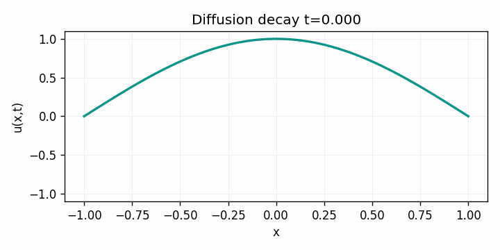

Example Gallery
Visual summaries of the implemented showcase problems. For derivations, see USAGE_EXAMPLES.md.
Implemented Scenarios
Chebyshev Linear BVP
Variable diffusivity with Dirichlet walls. Residuals and reference comparison highlight spectral accuracy.

Diffusion Decay
Heat equation solved by MOL + RK4. Animation showcases exponential decay.
Legendre Accuracy
Legendre vs Chebyshev comparison using barycentric interpolation and log–log error curves.

Nonlinear BVP
Newton iteration for y'' = sin(y) converging in one step thanks to analytic derivatives.

Wave Mixed BCs
Leapfrog integration with Neumann/Dirichlet boundaries; observe energy drift from boundary work.

What’s Next?
See Implementation Status for detailed instructions on Examples 6–10 and the remaining Julia tests.